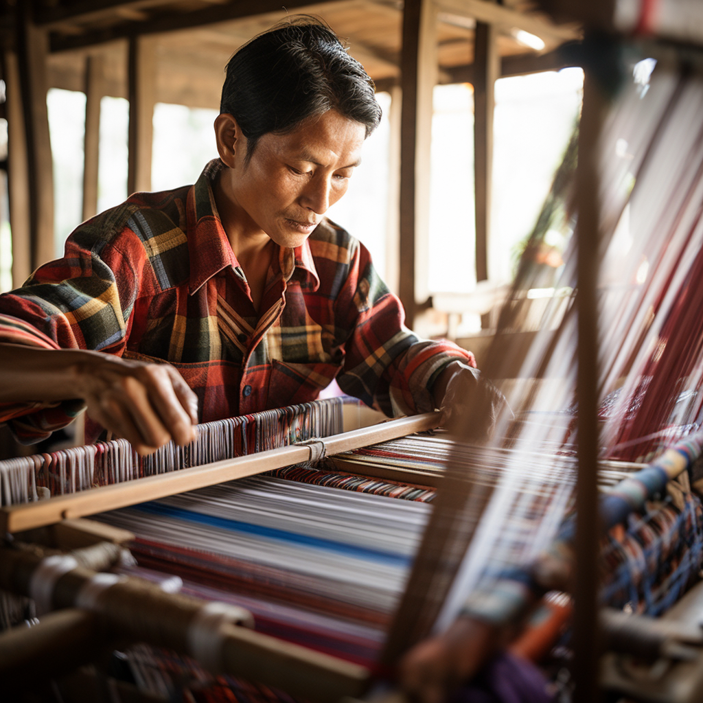

The Beauty of Ikat Weaving
Marvel at the artistry and precision of ikat weaving, an age-old technique that has been passed down through generations. As skilled weavers intertwine the warp and weft threads, intricate patterns emerge, creating vibrant textiles with mesmerizing designs. The combination of dyeing techniques and meticulous craftsmanship gives rise to unique patterns that tell stories of Indonesian folklore and heritage. Ikat weaving not only adorns clothing and textiles but also reflects the nation's cultural tapestry, celebrating the fusion of creativity and tradition.